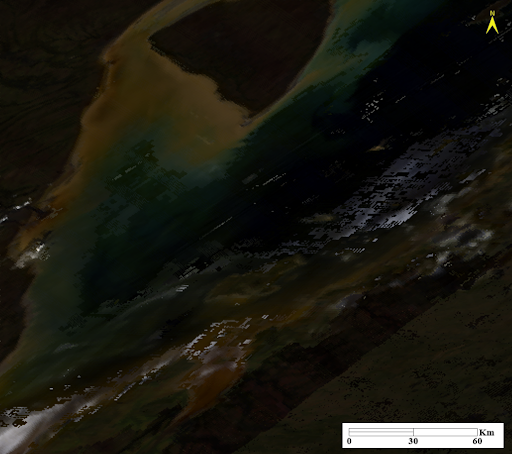
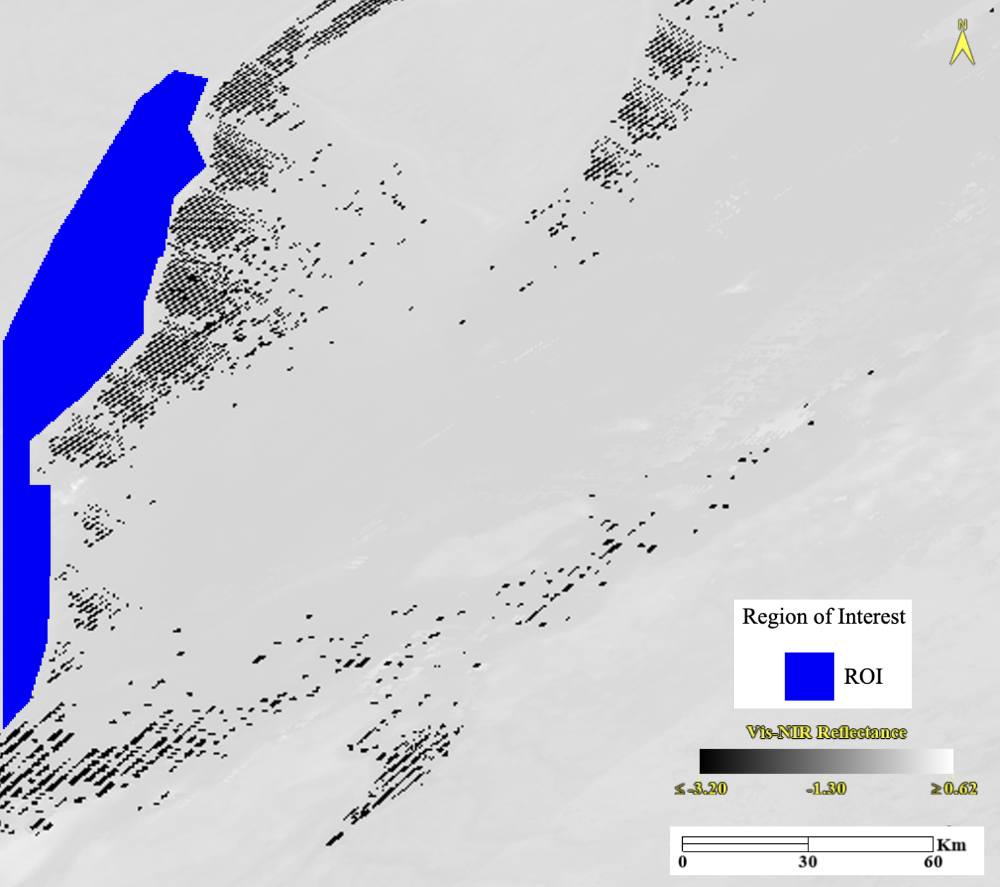

Extraction and Visualization of ROI Data Files
Source:vignettes/web_only/ROI_Files.Rmd
ROI_Files.RmdExtracting an ROI data file for mappred
Instructions
The mappred function uses a file containing spatial
information and spectral reflectance values of a Region of Interest
(ROI). An ROI is a selected sample from a raster in the image processing
and analysis software ENVI (NV5 Geospatial
nd-a). ENVI can be downloaded from the NV5 Geospatial website. A raster is a
common type of data used in ENVI which is generated from a data set.
Rasters are a continuous matrix or array of data numbers which can
represent many different types of information. The raster that will be
generated and used for the carbcontpred package will
represent the spectral reflectance information (NV5 Geospatial nd-b).
To extract an ROI data file for mappred you will first
download a data set in the form of a map image and open it on ENVI. This
data set will contain several spectral bands that cover specific
wavelength ranges. It is important that the wavelength range of the
spectral bands in the data set you use and the wavelength ranges you set
during the preprocessing of data for mappred are
similar.
You will then generate a raster of spectral reflectance from this data file using the Band Math tool in ENVI which can be found in the Band Algera folder in the Toolbox. Band Math will ask for an equation prompt which you will create using the spectral bands you chose to use. In Band Math, the equation will be written as the following:
[1]\[\begin{equation} \label{eq:1}((B[a] + B[b] + … B[z])/n)\end{equation}\]
where B[a, b, … z] are the bands you chose to use and n is the total number of chosen bands.
Applying this equation in Band Math will generate a raster showing
the average reflectance in the wavelength region that your chosen
spectral bands cover. You will now create an ROI using the Region of
Interest (ROI) tool at the top ribbon. You will select the New ROI
option within this tool and then create a polygon out of your area of
interest. Once this is done you will go to File in the tool, select
Export, and then pick Export to CSV. This will output the spatial and
reflectance information of points in your ROI as a data table which you
will use in mappred. Most of the columns in the data table
consist of spatial information but the average reflectance value will be
stored in the B1 column.
Example of Application
To extract Reflectance_ROI.csv which is the example ROI
data file in the carbcontpred package we downloaded a data
set from the Moderate Resolution Imaging Spectroradiometer (MODIS)
satellite operated by the National Aeronautics and Space Administration
(NASA). Specifically, we used MODIS/Terra Surface Reflectance Daily L2G
Global 1km and 500m SIN Grid data set. This data set provides an
estimate of surface spectral reflectance at the ground level. More
information about this data set can be found here.
For this example, we used the data captured on October 3, 2022. We
downloaded this data from the NASA Earthdata Search website under the ID
MOD09GA.A2022276.h13v03.061.2022278035218. We chose this date because it
is within the same year that the soil samples were collected. Although
the soil samples were collected in July, we chose October because it is
before snowfall and after the growing season in northern Ontario, which
means that the spectral reflectance of the soil is less obstructed by
snow or vegetation (National Aeronautics and
Space Administration nd). We opened the downloaded file on ENVI
and used Data Manager at the top ribbon to load a true colour composite
of the file. Using the data set website
for reference, we generated a true colour composite by putting Band 1 in
the red channel, Band 4 in the green channel, and Band 3 in the blue
channel (Land Processes Distributed Active
Archive Center nd).

Figure 1. A true colour composite of the Hudson Bay Lowlands. The image is generated from ENVI using the data file MOD09GA.A2022276.h13v03.061.2022278035218 from NASA. The composite was generated by using Band 1 in the red channel, Band 4 in the green channel, and Band 3 in the blue channel.
We generated a raster of spectral reflectance from this data file using Band Math and all 7 of the spectral bands in the file. This is because the 7 bands together cover a wavelength range from 620 nm to 2155 nm, which is a majority of the visible-near infrared (vis-NIR) region as shown on this website (Land Processes Distributed Active Archive Center nd). Thus, our equation for Band Math is constructed as follows:
[2]\[\begin{equation} \label{eq:2}((B1 + B2 + B3 + B4 + B5 + B6 + B7)/7)\end{equation}\]
where B1 to B7 are Bands 1 to 7 from the MOD09GA.A2022276.h13v03.061.2022278035218 data file.
After generating a raster of spectral reflectance from this data file using the Band Math tool, we used the Region of Interest (ROI) tool to create an ROI that covers the area around our soil sample sites as well as nearby peatlands.

Figure 2. A raster of the Hudson Bay Lowlands showing the average reflectance value over a wavelength range of 620 nm to 2155 nm. The blue area represents the Region of Interest (ROI). The image is generated from ENVI using the data file MOD09GA.A2022276.h13v03.061.2022278035218 from NASA. The raster was generated by the average value of Bands 1 to 7 in the data file.
Finally, we used Export to CSV to extract a data table containing the
spatial and reflectance information of points in our ROI. The data table
can be found in Reflectance_ROI.csv in the
carbcontpred package. Table 1 shows the
first 6 rows of the ROI_Predicted_Carbon.csv data file.
Table 1. The first 6 rows of the
ROI_Predicted_Carbon.csv data file. The B1
column represents the average reflectance values of the spatial points
over a wavelength range of 620 nm to 2155 nm.
| X..File.X | File.Y | Map.X | Map.Y | Lat | Lon | B1 |
|---|---|---|---|---|---|---|
| 91 | 1677 | -5517591 | 5894728 | 53.01250 | -82.47585 | 68.85428 |
| 92 | 1677 | -5517128 | 5894728 | 53.01250 | -82.46892 | 72.12532 |
| 90 | 1677 | -5518054 | 5894728 | 53.01250 | -82.48277 | 68.85428 |
| 89 | 1678 | -5518518 | 5894264 | 53.00833 | -82.48174 | 72.87362 |
| 90 | 1678 | -5518054 | 5894264 | 53.00833 | -82.47481 | 72.87362 |
| 91 | 1678 | -5517591 | 5894264 | 53.00833 | -82.46789 | 72.12532 |
Visualizing the output of mappred
Instructions
The mappred function will output a file similar to the
ROI data file you used as the input. The difference is that the spectral
reflectance values under the B1 column are now replaced
with the predicted organic carbon content. We can visualize the
predicted organic carbon content on a map through the geographic
information system software ArcGIS Pro. ArcGIS Pro can be downloaded
from the Esri website.
You will open ArcGIS Pro and set a basemap to whatever you choose and then upload your output ROI data file as a standalone table in the Contents pane. You will then select the file and use the Display XY Data action to create a point feature class based on the x and y values from your file. To do this, your parameters for the X Field, Y Field, and Z Field will be your Lon, Lat, and your predicted organic carbon content (Usually the B1 column). The rest of the parameters can be customized according to your preferences. This will create a layer of points over your ROI based on the spatial information provided in the data file. Next, you will use Conversion Tools and select Point to Raster (Feature to Raster will also work). The prompt will ask for your Input Features and your Value field, which will be your point feature class and your predicted organic carbon content values (Usually the B1 column) respectively. The rest of the parameters can be customized according to your preferences. The output of this map is a raster similar to the one for the spectral reflectance values in the previous section, except it is for the predicted organic carbon content instead of reflectance.
Example of Application
The output using the example in the carbcontpred package
is ROI_Predicted_Carbon.csv. We opened ArcGIS Pro and
selected the basemap to be Imagery. We uploaded
ROI_Predicted_Carbon.csv as a standalone table in the
Contents pane and then used the Display XY Data action to create a point
feature class with Lon, Lat, and the B1 column as the X Field, Y Field,
and Z Field respectively while leaving the default settings for
everything else. We then used Point to Raster and selected the point
feature class and the B1 column for the Input Features and the Value
field respectively. We left the default selection for Cell assignment
type, Priority field, and Cellsize, which were Most frequent, NONE, and
0.008 respectively. The output of this map is shown in Figure
3.

Figure 3. A raster of the Hudson Bay Lowlands
showing the predicted organic carbon content in percent dry mass of the
Region of Interest (ROI). The image is generated using the data file
MOD09GA.A2022276.h13v03.061.2022278035218 from NASA and the
carbcontpred package.